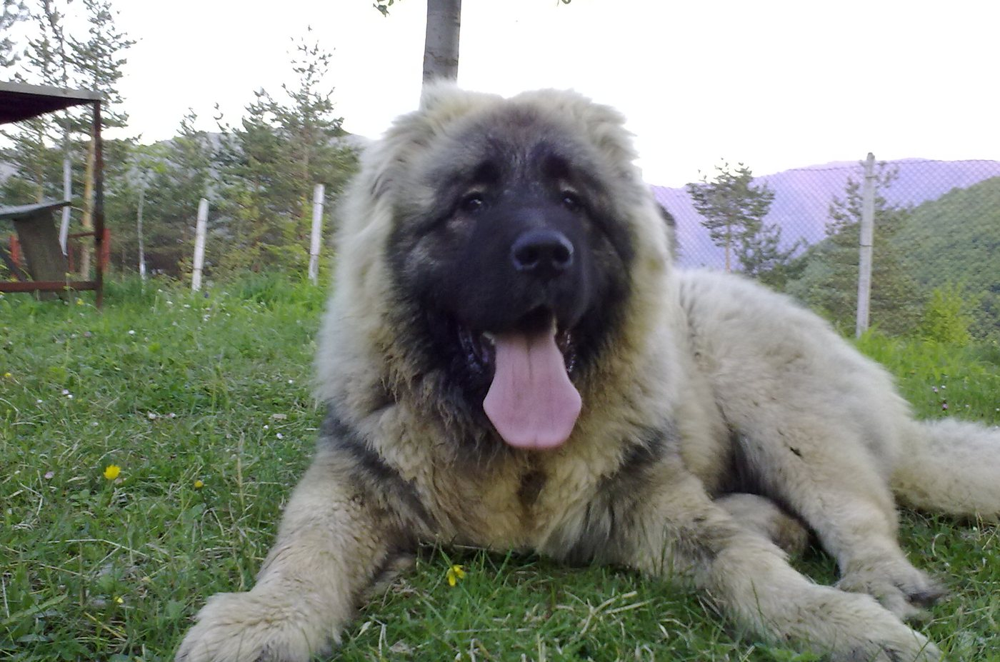

Защо ги бъркат
„Това алабай ли е?“ – питат ни често, когато видят наше куче. Кавказката и средноазиатската овчарка наистина си приличат: и двете са огромни, уверени кучета пазачи с древен произход.
Двете породи са признати от Международната кинологична федерация (FCI) в една и съща група – група 2, секция 2.2, молоси от планински тип. И за двете страна на стандарта е Русия, а сегашните стандарти са публикувани в един и същи ден – 13.10.2010 г. Различни са обаче по произход, външен вид и по част от характера.
Ние развъждаме само кавказки овчарки – и не случайно. За кавказката говорим от много години опит с нея, а за средноазиатската – по официалния ѝ стандарт. По-долу ще видите разликите и защо за нас кавказката е по-доброто куче пазач.
Различен дом, различен климат
Кавказката овчарка идва от планините на Кавказ – днешните Грузия, Армения, Азербайджан и Дагестан – и от степите на Южна Русия. Там зимите са сурови, затова кучето има дълга, гъста и непромокаема козина.
Средноазиатската овчарка произхожда от Централна Азия – Туркменистан, Узбекистан, Казахстан, Киргизстан и Таджикистан. Там векове наред е пазила стадата на номадите в степите и пустините, където лятото е горещо, а зимата студена. Козината ѝ е по-къса и по-прилепнала.
Сравнение по стандарта на FCI
| Признак | Кавказка овчарка | Средноазиатска овчарка |
|---|---|---|
| Стандарт FCI | № 328 | № 335 |
| Произход | Кавказ и Южна Русия | Централна Азия |
| Височина – мъжки | Минимум 68 см, желателно 72–75 см | Минимум 70 см, по-едрите са желани |
| Височина – женски | Минимум 64 см, желателно 67–70 см | Минимум 65 см |
| Тегло | Мъжки мин. 50 кг, женски мин. 45 кг | Мъжки мин. 50 кг, женски мин. 40 кг |
| Козина | Гъста, отстояща, с подкосъм; не по-къса от 5 см | Къса (3–5 см) или по-дълга (7–10 см) с грива на врата |
| Цветове | Всеки едноцветен, петнист или на петна, без черен, син и кафяв | Всякакви, без генетично син, генетично кафяв и черен чепрак на кафяво |
| Глава | Клин с широка основа, широки скули | Почти правоъгълна, с плосък и дълъг череп |
| Опашка | Естествена, сърповидна или на кравай; купираната дисквалифицира | Естествената и купираната са равностойни там, където купирането е разрешено |
| Характер по стандарт | Уравновесена, уверена, безстрашна, независима, силно привързана към стопанина | Уверена, спокойна, горда, независима, с инстинкт за територия, безстрашна към хищници |
Как да ги различите на пръв поглед

Козината. Това е най-лесната разлика. Кавказката изглежда като мечка – козината ѝ е гъста, отстояща и дълга поне 5 см, а мъжките имат буйна грива. Средноазиатската най-често е с къса, прилепнала козина и при нея се виждат мускулите и линиите на тялото.
Главата. Погледната отгоре, главата на кавказката прилича на клин с широка основа, със силно развити скули. Главата на средноазиатската е по-скоро правоъгълна, с плосък и дълъг череп и тъпа муцуна.
Цветовете. При средноазиатската са допустими почти всички цветове, включително черен. При кавказката черният цвет във всякакъв вариант е дисквалифициращ, както и генетично синият и кафявият.
Ушите и опашката. В страните на произход ушите и на двете породи традиционно се купират, а при средноазиатската – и опашката. В България обаче купирането на уши и опашки с цел промяна на външния вид е забранено от закона (чл. 7 от Закона за защита на животните). При кавказката купираната опашка е и дисквалифициращ недостатък по стандарт.
Защо избрахме кавказката
- По-масивна и по-тежка. На височина двете породи са близки, но кавказката средно е по-тежка, с по-широк гръден кош и по-здрав костяк. Още стандартът изисква поне 45 кг за женската кавказка, а за средноазиатската – 40 кг.
- Много едри кучета. Желаната височина на кавказкия мъжки е 72–75 см, но в добрите линии има и много по-едри кучета. Нашите мъжки са над 80 см, а най-едрият ни мъжки в развъдника е висок 90 см и тежи 100 кг. От нашия развъдник е и най-тежкото мъжко куче кавказка овчарка в България – 116 кг.
- Пази хората си, не само двора. Кавказката се привързва към своето семейство за цял живот и го пази, където и да е.
- Издържа на всякакво време. Гъстата, дълга козина с подкосъм я пази в снега и дъжда – зимата е любимият ѝ сезон.
- Внушителен вид. С гривата и мечешката си глава кавказката изглежда още по-голяма. Често самият ѝ вид стига, за да не посмее непознат да влезе.
Характер – по-близки, отколкото изглеждат
И двете породи са самостоятелни пазачи, които сами преценяват кога има опасност. Не са кучета, които изпълняват команди сляпо. Стандартите и на двете дисквалифицират агресивните и страхливите кучета – правилното поведение е уверено и уравновесено.
Кавказката се привързва силно към своя стопанин и семейство – обикновено за цял живот. Тя е недоверчива към непознати и пази преди всичко дома и хората си. За нея повече може да прочетете на страницата Кавказка овчарка.
Средноазиатската е описана в стандарта като уверена, спокойна, горда и независима, с висока работоспособност и издръжливост, силен инстинкт за територия и безстрашие пред едри хищници.
Коя порода е за Вас
И двете породи имат нужда от къща с голям, добре ограден двор, от опитен и последователен стопанин и от ранна социализация. Нито една от тях не е за апартамент.
- Ако искате най-едрия и най-мощния пазач, който се привързва силно към семейството и пази дома Ви в студ и сняг – кавказка овчарка.
- Средноазиатската може да е по-удобна само ако живеете на място с много дълго и горещо лято и държите на къса козина.
- Каквото и куче да изберете, търсете кученце с родословие FCI и вижте родителите му. Само така знаете какво ще порасне.
Чудите се колко струва едно кученце? Вижте как се образува цената на кавказката овчарка.
Често задавани въпроси
Алабай и средноазиатска овчарка едно и също ли са?
В България „алабай“ е популярното име на средноазиатската овчарка. Официалното име по FCI е средноазиатска овчарка (стандарт № 335). Кавказката овчарка е отделна порода със стандарт № 328.
Коя е по-голяма – кавказката или средноазиатската овчарка?
На височина двете породи са близки – по стандарта на FCI минимумът за мъжките е 68 см при кавказката и 70 см при средноазиатската, а желаната височина на кавказкия мъжки е 72–75 см. Средно обаче кавказката е по-тежка, по-масивна и с по-здрав костяк. Има и много едри кавказки овчарки – нашите мъжки са над 80 см, а най-едрият ни мъжки е висок 90 см и тежи 100 кг.
Коя порода е по-добър пазач?
И двете породи са създадени за пазачи. За пазач на дом и семейство ние избираме кавказката – тя се привързва силно към своите хора и пази тях, а не само територията, а внушителният ѝ вид спира натрапниците, преди да е нужно да действа. Много зависи и от линията, отглеждането и възпитанието.
Коя понася по-добре жегата?
Средноазиатската овчарка произхожда от горещите степи и пустини на Централна Азия и по-късата ѝ козина обикновено ѝ помага да понася жегата по-леко. Кавказката е създадена за планински студ и през лятото има нужда от сянка, много вода и разходки в хладните часове.
Има ли кръстоски между двете породи?
Да, срещат се кучета, които се продават като едната или другата порода, а всъщност са кръстоски. Единствената гаранция е родословие FCI, в което са записани родителите и предците.
Източници: стандарт FCI № 328 (кавказка овчарка) и № 335 (средноазиатска овчарка), публикувани на fci.be; Закон за защита на животните, чл. 7.